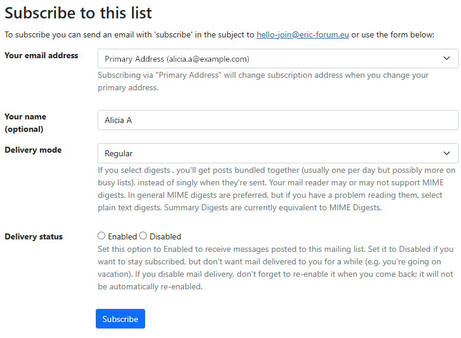
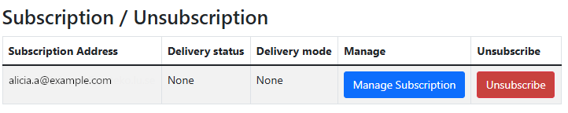
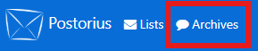

Manage your subscriptions and settings
After signing in, you can manage your subscriptions, change your settings, and subscribe to new lists.
Subscribing
After signing in to the ICOS Mailing Lists home page, you will see a table of the mailing lists you are currently subscribed to, or have a Moderator or Owner role in. If you click on the All button in the Role Selection area, you will be able to see all of the mailing lists that you can subscribe to.
To subscribe to a list, click on the list's name. You will then see a section named Subscribe to this list. Here, you can select which email address you would like to use for this list, your name, the delivery mode for the list, and the delivery status. (For more information about these settings, see Manage delivery preferences below.)
After filling out the form (or leaving it with its default values), click the Subscribe button. If the list membership is unmoderated, you will receive an immediate notification email confirming your subscription; otherwise, you will have to wait for the list moderator to approve your membership.

Unsubscribing
Click on the Member button in the Role Selection area to view lists you are subscribed to. Then, click on the list name. You will now be able to click the Unsubscribe button to unsubscribe from the list.

Manage delivery preferences
Global Mailman preferences
To access the Global Mailman preferences, click on your name/profile picture in the upper right corner of the screen. Then, select Mailman Settings from the drop-down menu. Click on the Global Mailman preferences tab to access the menu.
There are several preferences that you can change, which apply to all of the lists you are subscribed to. These settings are the "default settings" that apply to any list you are subscribed to. You can override the settings for specific lists by changing your List-based preferences.
Here is a detailed list of the settings you can change and what each selection does:
- Delivery status: By default, Enabled is selected, which means you will receive mail from the mailing lists you are subscribed to. You can disable all email delivery while remaining subscribed to the mailing lists by selecting Disabled. Note that this will not automatically revert, so you will need to return to this page to re-enable mail delivery in the future.
- Delivery mode: By default, Regular is selected, which means you will receive each email sent individually. If you would prefer to receive fewer messages, you can select one of the Digest options, which means you will receive mail sent to the list in batches, usually once per day for each list. Generally, the MIME Digests option is the best option, but if your email client does not display messages properly, you can select Plain Text Digests. (Note that Summary Digests is currently equivalent to the MIME Digests option.)
- Receive own postings: By default, Yes is selected, which means you will receive your own email messages when you send them to a list. If you would prefer to not receive your own messages, select No.
- Acknowledge posts: By default, No is selected, which means you will not receive acknowledgment emails when you send mail to a list. You can opt to receive acknowledgment messages, confirming you have successfully sent mail to a list, by selecting Yes.
- Hide address: By default, Yes is selected, which means your email address will not be visible to other members of the mailing list. If you do not wish to hide your email address, select No.
- Receive list copies (possible duplicates): By default, Yes is selected, which means you will receive additional copies of some messages if you are explicitly included in the To: or CC: fields. You can select No so that the mailing list will detect and not send messages if you are already included in the To: or CC: fields.
- Preferred language: By default, English (USA) is selected. You can change this by selecting your preferred language for your interactions with the mailing list system, which will change the language used in your email notifications (but will not affect the mailing lists home page).
Note
Remember to click the Save changes button when you are finished making your selections.
Address-based preferences
To access the Address-based preferences, click on your name/profile picture in the upper right corner of the screen. Then, select Mailman Settings from the drop-down menu. Click on the Address-based preferences tab to access the menu.
If you have multiple email addresses configured, such that some lists use one email address while other lists use another, you can manage the delivery options for each email address so that certain settings are overridden for an email address. (To set this up, see Account settings to add other email addresses, and List-based preferences to select a different email address for a specific list.)
Refer to the Global Mailman preferences for explanations of each setting, and then change them as you would like in the table. Click Save to save your changes.
List-based preferences
To access the List-based preferences, click on your name/profile picture in the upper right corner of the screen. Then, select Mailman Settings from the drop-down menu. Click on the List-based preferences tab to access the menu.
You can override the Global Mailman preferences for specific lists here. Refer to the Global Mailman preferences for explanations of each setting. You can either change options within the displayed table, and then click Save to save your changes, or click on a specific list name to change the settings for that list.
In additon to overriding the Global Mailman preferences, explained above, you can change an additional setting for a specific list after clicking into the list:
- Select Email: You can select an alternate email address for a specific list to send email to. (You can add an email account by changing your Account settings, shown below on this page.)
Note
If you are changing the email address to deliver to, remember to click the Change email used for subscription button. If you change any of the other preferences, remember to click the Save changes button when you are finished making your selections.
Manage account settings
To manage your account settings, click on your name/profile picture in the upper right corner of the screen. Then, select Account from the drop-down menu. You will see several buttons to allow you to navigate between different tabs:
- Account: You can change your username, first name, last name, and time zone.
- Change Password: You can change your password.
- E-mail Addresses: You can add additional email addresses by typing the address in the Email address box and clicking the Add E-mail button. You can also see the verification status of each email address, use the Re-send Verification button to re-send a verification email, use the Make Primary button to make a different email address the primary email address of your account, or Remove email addresses.
- Delete Account: You can delete your account.
View past mail sent to a mailing list (list archives)
Attention
Due to a known bug, the list archive is currently not operational. We hope to have it operational again soon!
To view the list archives, click on the Archives link in the header, near the upper left section of the screen.

Here you can see the available lists that you have access to. Click on a list name to view the archive of that list.
The default landing page will show you the past 30 days of activity. Click on the All threads button, in the column to the right, to view every message. You can also use the Threads by month menu to select a specific month to view.
You can use the search box in the upper right to search through the mailing list's archive as well.
If you have any questions about our ICOS services or feedback regarding our documentation, you can email our User Support team at help@icos-ri.eu.